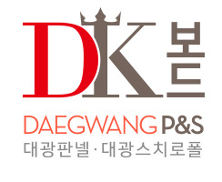
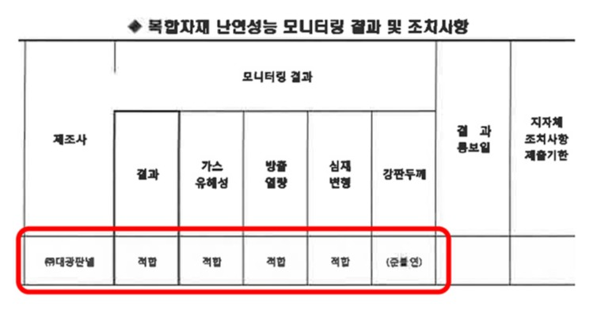

DK보드는 대통령상 3년 연속 수상의 신화를 창조한 ㈜대광판넬의 우수한 기술력이 만들어낸 100% 정품 준불연 EPS 판넬입니다.
Daegwang(대광) + Kaiser(황제)로 준불연 EPS 판넬의 ‘카이저(황제)’가 되겠다는 대광의 약속을 담고 있으며,
특히 국토교통부에서 실시하는 2018 ‘건축안전모니터링’에서 ‘적합’판정을 받아 품질의 우수성이 검증되었습니다.

국토교통부 2018 건축안전모니터링 결과, (주)대광판넬 적합판정